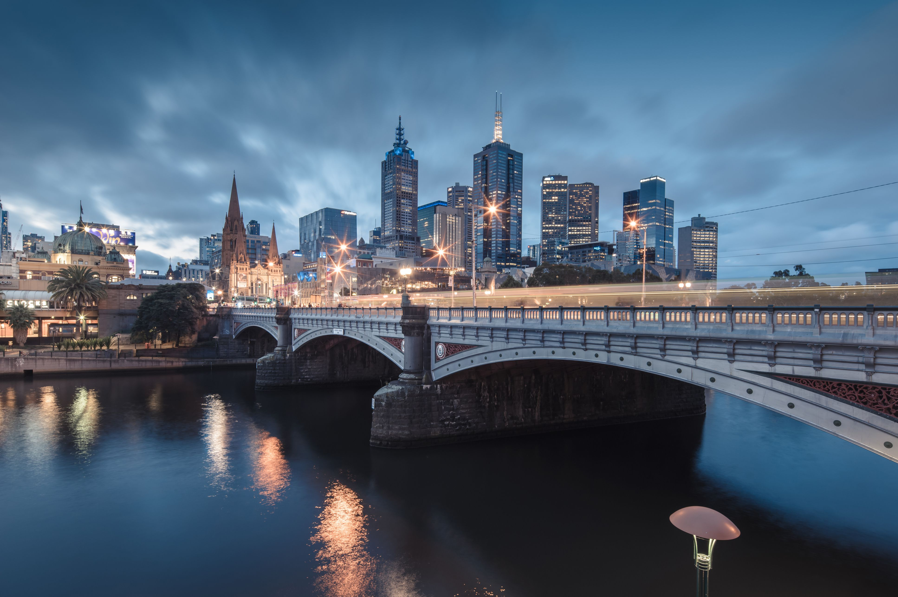
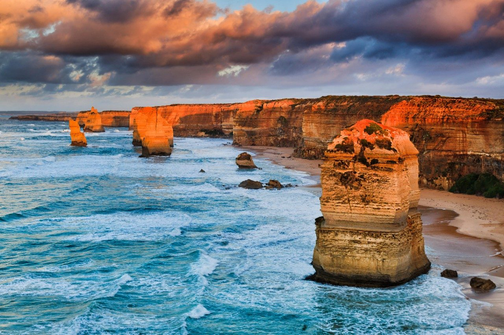
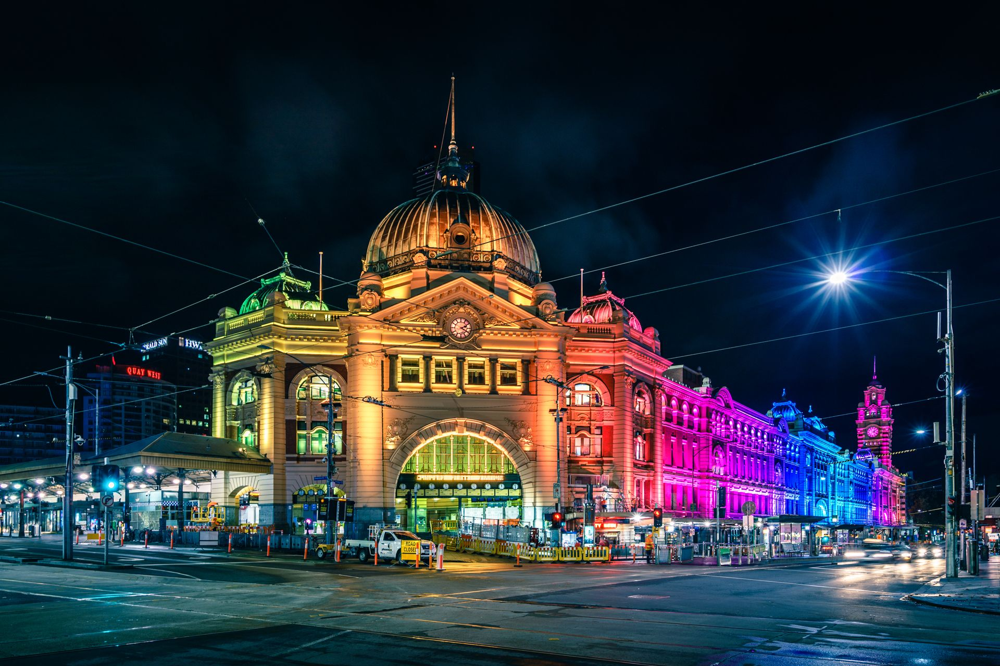
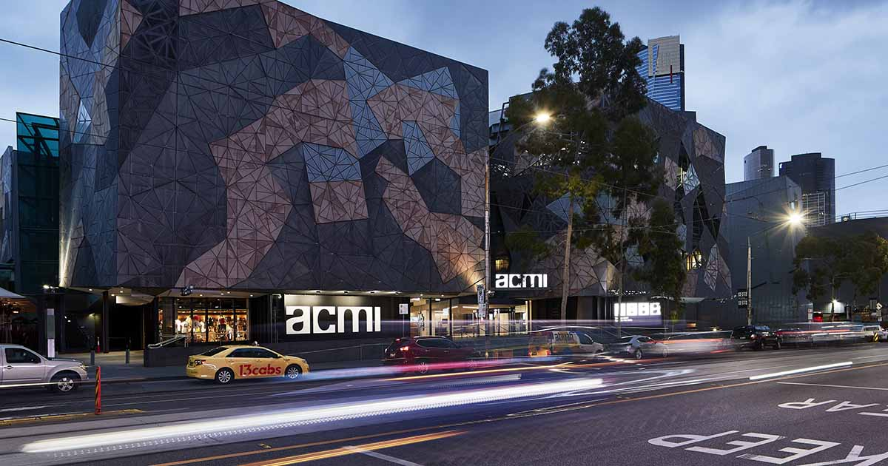

Lugares de interés
Melbourne

Melbourne, la ciudad bohemia de Australia
Vivir en Melbourne, la ciudad bohemia de Australia te cambiará la vida. Esta ciudad es perfecta para los que aman el café y las artes.
¿Por qué estudiar y trabajar en Melbourne? Catalogada como la segunda ciudad con mejor calidad de vida del mundo, Melbourne ofrece una gran variedad de actividades culturales para todos los gustos.
Emigrar a Australia y vivir en Melbourne te acercará a otras culturas, lenguajes y aventuras. Lánzate a tener una experiencia nómada, descubre todo lo que Australia tiene para ofrecer.
Great Ocean Road

Ruta por la Great Ocean Road
La Great Ocean Road es la mejor ruta para hacer en Australia. Es uno de los viajes en carretera más populares del país, muy conocido por su belleza, paisajes y fauna. Este ha sido uno de los viajes más bonitos que he hecho. La gente suele hacer una ruta de 3 días y no llegar más lejos de los famosos 12 Apóstoles; nosotros hicimos una ruta de 9 días y llegamos hasta el estado de South Australia: ya que viajamos lo hacemos bien.
Street Station

Flinders Street Station
La estación de Flinders, de estilo victoriano, esta situada en el corazón de la ciudad, junto al río Yarra.
Uno de los lugares que sin duda visitaréis en Melbourne. Es uno de los símbolos de esta ciudad australiana y además el centro de toda la actividad del sistema de transporte, un popular centro de reunión y una referencia frecuente. Por eso, no hay duda, pasaréis por aquí.
Se dice de ella que es la estación de ferrocarril suburbana mas multitudinaria de todo el hemisferio sur. Se trata de un edificio de arquitectura victoriana que contrasta con la moderna Federation Square cercana. Una especie de puente entre el pasado y el presente muy bien conservado e impresionante, tanto por fuera como por dentro.
La Estación Flinders está en la esquina de las calles Flinders y Swanston y fue construida en 1884. Suele abrir desde las 5am hasta las 3am, todos los días.
ACMI

Australian Centre for the Moving Image
Si eres un amante del cine y las tecnologías digitales, disfrutarás especialmente de tu visita al Australian Centre for the Moving Image, ya que se trata de un museo exclusivamente dedicado a la exposición del arte audiovisual en el cual se realizan múltiples exhibiciones interactivas, con imágenes en movimiento y diferentes sensaciones que te llevarán a mundos mágicos. En este museo también encontrarás videojuegos y muchas innovaciones de tecnología bastante interesantes.